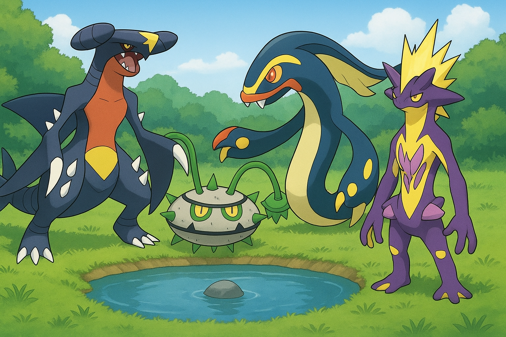

Pokemon Pond
A virtual ecosystem where fish and plants interact in a lively and dynamic aquatic environment. This project brings the ecosystem to life by modeling the behavior and survival of organisms through a 2D grid. In this world, fish swim around and consume plants to sustain themselves, while plants grow with water and sunlight, only losing mass when they're nibbled on by the fish.